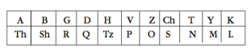

77
Langdon oldukça etkilenmişti. Teabing yirmi iki harfli İbrani alfabesini -alef-bet- ezbere yazmıştı. İbrani karakterleri yerine Latin harflerini kullanarak yazmıştı ama buna rağmen, alfabeyi akıcı bir telaffuzla okuyordu.
A B G D H V Z Ch T Y K L M N S O P Tz Q R Sh Th
“Alef, Bet, Gimel, Dalet, Het, Vav, Zayın, Çet, Tet, Yod, Kaf, Lamed, Mem, Nun, Sameh, Ayın, Pe, Tsadik, Kof, Reş, Şın ve Tav.”35 Teabing alnının terini silerek, tekrar işe koyuldu. “İbrani dilinde sesli harfler yazılmaz. Bu yüzden Baphomet kelimesini İbrani alfabesiyle yazacak olursak, üç sesli harf düşer ve geriye...”
Sophie, “Beş harf kalır,” diye atıldı.
Teabing başını sallayarak yeniden yazmaya koyuldu. “Tamam, işte İbrani alfabesiyle Baphomet kelimesi böyle yazılıyor. Daha açık anlaşılması için sesli harfleri de araya yazacağım.”
B a P V o M e Th
“Elbette,” diye ekledi. “İbranicenin tersten yazıldığını unutmamak gerekir ama Atbash’ı bu şekilde daha kolay kullanırız. Bundan sonra, yerine kullanma tablosunu oluşturmak için tüm alfabeyi orijinalinin tersinden yeniden yazmamız gerekiyor.”
Kalemi Teabing’in elinden alan Sophie, “Daha kolay bir yolu var,” dedi. “Atbash da dahil, tüm yer değiştirmeli şifreler için geçerlidir. Royal Holloway’de öğrendiğim ufak bir hile.” Sophie alfabenin ilk yarısını soldan sağa yazdıktan sonra altına ikinci yarısını sağdan sola doğru yazdı. “Kriptoloji analistleri buna katla-kıvır derler. Yarı yarıya karıştırılmış. Ama iki kat daha temiz.”

Elişine bakan Teabing kıkırdadı. “Haklısın. Holloway’deki çocukların işlerini yaptıklarına sevindim.”
Sophie’nin yer değiştirme matrisine bakan Langdon, eski alimlerin ünlü Şeşak Gizemi’ni36 çözmek için Atbash Şifresi’ni ilk kullandıklarında hissettikleri dehşeti duydu. Din alimleri yıllarca İncil’de Şeşak diye bir şehirden bahsedildiğini görüp muallakta kalmışlardı. Bu şehir herhangi bir haritada ya da başka bir belgede görünmüyordu ama Yeremya Kitabı’nda sıkça bahsi geçiyordu, -Şeşak kralı, Şeşak şehri ve Şeşak halkı. Sonunda bir alim kelimeye Atbash Şifresi’ni uyguladığında sonuçları herkesi hayrete düşürmüştü. Şeşak kelimesinin aslında oldukça iyi bilinen başka bir şehrin şifrelenmiş hali olduğunu ortaya koymuştu. Şifre çözme işlemi oldukça basitti.
Şeşak kelimesi İbranicede Sh-Sh-K diye yazılıyordu.
Sh-Sh-K harfleri yer değiştirme tablosuna yerleştirildiğinde, B-B-L harflerini veriyordu.
B-B-L ise İbranicede Babil diye okunuyordu.
Gizemli Şeşak şehrinin aslında Babil şehri olduğu ortaya çıktıktan sonra, İnciller deli gibi araştırılmaya başlanmıştı. Birkaç hafta sonra Eski Ahit’te alimlerin farkında olmadıkları daha pek çok Atbash şifreli kelimenin bulunduğu keşfedilmişti.
Heyecanını bastırmakta güçlük çeken Langdon, “Yaklaşıyoruz,” diye fısıldadı.
Teabing, “Adım adım Robert,” dedi. Sophie’ye bakarak gülümsedi. “Hazır mısın?”
Sophie başını salladı.
“Pekâlâ, Baphomet kelimesi ünlüleri indirgendiğinde İbranicede B-P-V-M-Th diye yazılıyor. Şimdi beş harfli şifremizi bulmak için Atbash yer değiştirme matrisine uygulayalım.”
Langdon’ın kalbi hızla çarptı. B-P-V-M-Th. Şimdi güneş pencerelerden içeri doluyordu. Sophie’nin yer değiştirme matrisine bakarak, çeviriyi yapmaya başladı. B yerine Sh... P yerine V...
Teabing Noel zamanı gelen bir okul çocuğu gibi sırıtıyordu. “Ve Atbash Şifresi diyor ki...” Sesi kesilmişti. “Aman Tanrım!” Yüzü bembeyaz olmuştu.
Langdon’ın kalbi tekledi.
Sophie, “Ne oldu?” diye sordu.
“Buna inanmayacaksın.” Teabing, Sophie’ye baktı. “Özellikle sen.”
“Ne demek istiyorsunuz?” diye sordu.
“Bu... gerçekten dâhice,” diye fısıldadı. “Son derece zeki!” Teabing yeniden kâğıda yazdı. “Davullar lütfen. İşte şifreniz.” Yazdıklarını onlara gösterdi.
Sh-V-P-Y-A
Sophie, “Bu ne böyle?” diye kaşlarını çattı.
Langdon da anlayamamıştı.
Teabing’in sesi huşuyla titriyordu. “Bu dostum, hikmet kelimesinin eski hali.”
Langdon harfleri yeniden okudu. Eski hikmet sözü çözer bunu. Bir saniye sonra her şeyi anlamıştı. Bunu hiç tahmin etmemişti. “Eski hikmet kelimesi!”
Teabing kahkahalarla gülüyordu. “Harfi harfine!”
Sophie önce kelimeye, ardından kripteksteki harflere baktı. Langdon ile Teabing’in göremediği ciddi bir yanlışlığı fark etmişti. “Durun biraz! Şifre bu olamaz,” diye karşı çıktı. “Kripteksin üstünde Sh harfi yok. Geleneksel Latin harfleri kullanılmış.”
Langdon, “Kelimeyi oku,” diye ısrar etti. “İki şeyi aklından çıkarma. İbranicede Sh harfine karşı gelen sembol, vurgu işaretine bağlı olarak aynı zamanda S diye de okunabilir. P harfi de aynı şekilde F diye okunabilir.”
Sophie’nin SVFYA? diye düşünürken aklı karışmıştı.
Teabing, “Dâhice!” dedi. “Vav harfi genellikle O seslisi yerine kullanılır.”
Yeniden harflere bakan Sophie, yüksek sesle okumaya çalıştı.
“S... o... f... y... a.”
Kendi sesini duyduğunda, ağzından çıkanlara inanamamıştı. “Sophia mı? Bu Sophia diye mi okunuyor?”
Langdon hararetle başını sallıyordu. “Evet! Sophia, Yunancada hikmet demektir. İsminin kökeni Sophie, gerçekten ‘eski hikmet sözüdür.’”
Sophie birden büyükbabasına karşı derin bir özlem duydu. Tarikat kilit taşını benim ismimle şifrelemiş. Boğazında bir yumru oluşmuştu. Her şey son derece mükemmeldi. Ama gözlerini kripteksin üstündeki harflere çevirdiğinde, hâlâ bir sorun olduğunu gördü. “Ama durun... Sophia kelimesinde altı harf var.”
Teabing gülümsemeye devam ediyordu. “Şiire yeniden bak. Büyükbaban ‘eski hikmet sözü,’ demiş.”
“Evet?”
Teabing göz kırptı. “Eski Yunancada, hikmet S-O-F-I-A diye yazılır.”